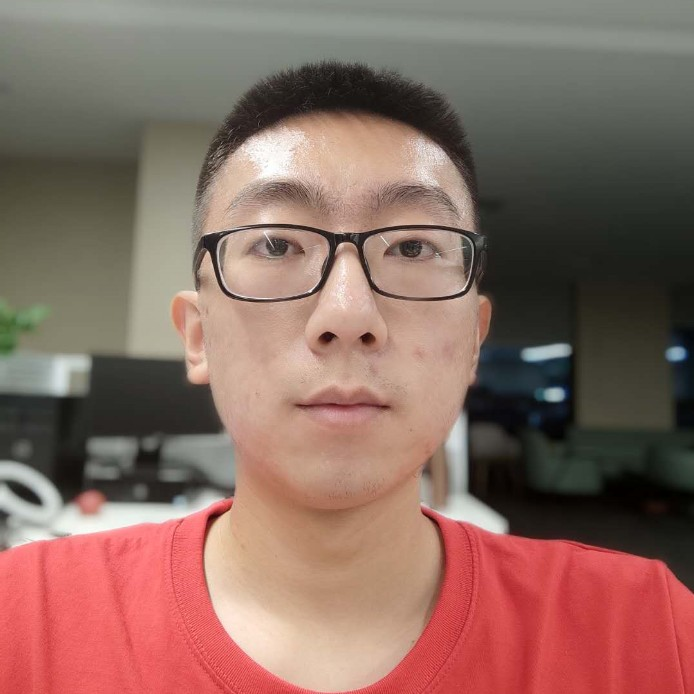

Bo Liu (刘铂)Master
School of Computer Science & Engineering |
 |
First Author:
Bo Liu, Lin Gu, Shancheng Zhang, Yuhao Niu, Feng Lu. What's in the Vessel: A Novel Vessel Structure Descriptor for Fundus Disease Analysis (In Preparation)
Bo Liu, Lin Gu, Feng Lu. Unsupervised Ensemble Strategy for Retinal Vessel Segmentation. Medical Image Computing and Computer Assisted Intervention (MICCAI), 2019.
Participating:
Feifan Lv, Bo Liu, Feng Lu. Fast Enhancement for Non-Uniform Illumination Images using Light-weight CNNs. ACM Multimedia (ACM MM), 2020.
Mingjing Ai, Guozhi Shan, Bo Liu and Tianyang Liu. Rethinking ReID：Multi-Feature Fusion Person Re-identification Based On Orientation Constraints. (Under Review by ICPR 2020)
Wenhan Yang, Ye Yuan, Wenqi Ren, ..., Bo Liu, et al. Advancing Image Understanding in Poor Visibility Environments. IEEE Transactions on Image Processing (TIP), 2019.
Yanjie Lian, Huifang Ma, Wang Li, ..., Bo Liu. Study on the Rule of Prescription of Alopecia in Tang and Song Dynasty. Chinese Medicine Modern Distance Education, 2018. (In Chinese)
Huawei Scholarship (selected 2 among 300 students), 2020
National Scholarship (top 1%), 2018 & 2016
National Scholarship for Encouragement (top 3%), 2017
Graduate Student Travel Award of MICCAI, 2019
Outstanding Graduate Student of Xidian University, 2018
Meritorious Winner of Interdisciplinary Contest in Modeling (top 10%), 2017 & 2016